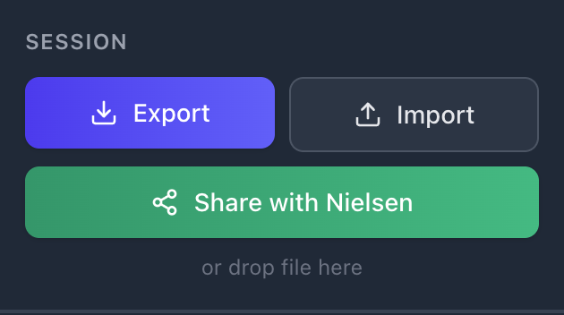
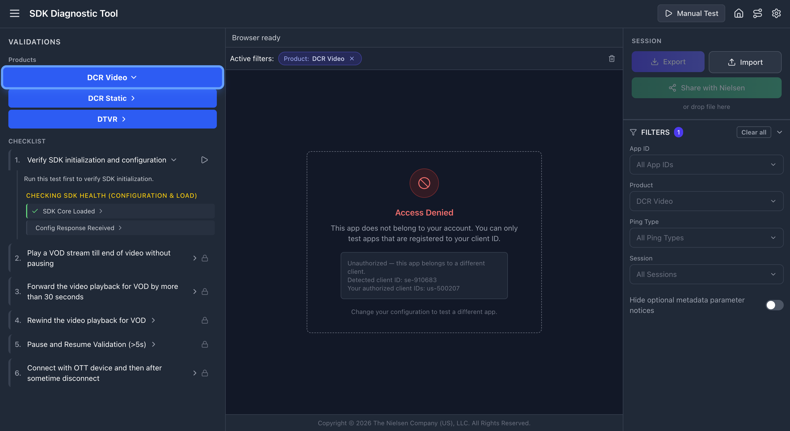

1 Overview
The Nielsen Digital SDK Integration Assistance & Diagnostic Tool (short: SDK Diagnostic Tool) helps developers integrate the Nielsen SDK correctly and validate their implementation before certification.
Integration Wizard
Step-by-step SDK integration guidance. Access documentation, code examples, and implementation assistance for DCR Static, DCR Video & DTVR integrations.
Diagnostic Tool
Diagnose and validate DCR Static, DCR Video & DTVR integrations. Capture logs from mobile apps and browsers, run validation tests, and diagnose SDK implementation.

Key Resources
2 Installation
Download the tool for your platform from the Downloads section on GitHub.
🍎 macOS (DMG)
▼Download
Download NielsenSDKTool.dmg from GitHub Releases.
Open & Install
Open the DMG file. Drag NielsenSDKTool.app to the Applications folder shortcut shown in the window.
First Launch
Double-click NielsenSDKTool.app in Applications. macOS may ask "Are you sure you want to open it?" — click Open. You may also see additional permission prompts (Accessibility, Terminal access, etc.) — click Allow for each. These are required for device log capture.
Grant Permissions
The app may ask to control Terminal.app — click Allow. For certain devices like Apple TV, the tool may prompt for your macOS password (sudo access) to establish the wireless connection.
Ready
Terminal opens, checks for updates, and launches the tool. Your default browser opens automatically at localhost:3000.
💻 Windows (ZIP)
▼Download
Download NielsenSDKTool-win.zip from GitHub Releases.
Extract
Extract the ZIP to any folder.
Launch
Double-click UpdateAndLaunch.bat to check for updates and start the tool. Windows may show a security prompt — click “Run” to proceed. Alternatively, run NielsenSDKTool.exe directly for a clean launch without auto-update (signed by The Nielsen Company).
http://localhost:3000/ into any browser to access the tool.Auto-Update
The tool automatically checks for updates every time you launch it. If a newer version is available, it downloads and installs before starting — no action needed on your part. If auto-update fails (e.g., behind a corporate proxy), download the latest version manually from GitHub Releases.
3 Login
The tool requires authentication. Your Nielsen TAM provides your username during onboarding — no password required for client accounts.
How to Get Your Credentials
Your Nielsen Technical Account Manager (TAM) onboards you via this tool and shares a username with you. This is the only credential you need. If you don't have one yet, contact your TAM.
Login Flow
Launch the tool
Open NielsenSDKTool (macOS) or run NielsenSDKTool.exe (Windows). The login screen appears.
Enter your username
Type the username provided by your TAM. You can also enter a display name — this is optional but helpful when multiple team members share the same client account. Your display name appears in shared sessions so your TAM can see who ran which test.
Click "Sign in"
You're logged in immediately — no OTP or password needed for client accounts.
Session & Timeout
| Behavior | Details |
|---|---|
| Session duration | Stays active for 24 hours of inactivity. Any click, keystroke, or interaction resets the timer. |
| Offline mode | If the server is unreachable, the tool uses cached credentials — you can keep working. |
| Sign out | Click your name (top-right corner of the home screen) → Sign out. |
| Expired session | If your session expires, you'll see "Session expired — please log in again". Just enter your username again. |
4 Integration Wizard
A 7-step guided wizard that generates platform-specific code snippets for your Nielsen SDK integration. It helps you write the correct integration code before you test it.
Step 1 Configuration Platform & SDK Variant
▼Select your application platform, programming language, and package manager. This choice determines all code snippets in later steps.
| Platform | Languages | Package Managers |
|---|---|---|
| iOS | Swift, Objective-C | CocoaPods, Carthage, Swift Package Manager |
| Android | Java, Kotlin | Gradle (with SDK flavor: Ad ID, Vendor ID, No ID) |
| Web/Browser | JavaScript | NPM / CDN Static Queue |
| tvOS | Swift, Objective-C | CocoaPods, Carthage, Swift Package Manager |
| Domless | JavaScript | NPM (React Native, Amazon Fire TV, Node.js, Custom) |
Step 2 App ID Nielsen Configuration
▼Enter your Nielsen App ID — a unique identifier in P-UUID format provided by your Nielsen TAM. The wizard validates the format and (for Web) auto-detects your CDN domain (cookieless vs standard). Optional advanced parameters can be added here.
Step 3 Import & Init Setup SDK
▼The wizard generates SDK import statements, dependency installation instructions, and initialization code for your platform. Includes CDN domain configuration. All code blocks are copy-paste ready with inline comments.
Step 4 Select Product Content Type
▼Choose your measurement product:
- Video (DCR Video) — For video content measurement
- Static Content/Pages (DCR Static) — For page view measurement
- Digital TV (DTVR) — For TV audience measurement (Global variant only)
You can integrate multiple products — the wizard tracks which ones you've completed.
Step 5 Implementation API Integration
▼Complete API integration code tailored to your selected product. Includes metadata objects, event handling, playhead tracking, and all required SDK API calls. For DCR Video, you can toggle between content-only and content + ads flows. Each code block includes inline comments explaining the purpose.
Step 6 Advanced APIs Optional Features
▼Optional advanced features you can add to your integration:
- Update OTT Status — OTT device reporting
- Track Viewability — Ad viewability measurement
- Pagination Events — Paginated content tracking
- Update Metadata — Mid-stream metadata updates
- Volume Reporting — Audio volume level tracking
- Privacy and Opt-Out — User privacy controls (with flavor-specific implementation)
- Disable SDK — Runtime SDK enable/disable
Skip any that don't apply to your use case.
Step 7 Completion Summary & Next Steps
▼Summary of your configuration — shows your App ID, platform(s), and all integrated products with checkmarks. From here you can add more products, integrate for another platform, or return to the home screen to start validation testing.
5 Validation Interface
The Diagnostic Tool validates your SDK integration in real time. Watch the video below to see how it works, then explore the panel details.
Three-Panel Layout

Left — Validation Checklist
Your test control center. Shows product tabs, numbered test cases, and pass/fail rules. Click Play to start a test. Rules turn green as events pass.
Center — Live Log Stream
Every SDK event in real time. Color-coded badges show types. Red = failures. Yellow = warnings. Click any row to inspect full ping details.
Right — Session & Filters
Share sends results to your TAM. Export saves locally. Import loads a session. Filters narrow logs by App ID, product, or type.
How the Validation Checklist works
▼- Test Case 1 must run first — checks SDK health (loaded, configured, debug flag). All others are locked until this completes.
- 🔒 Locked / 🔓 Unlocked — remaining tests unlock once Test Case 1 passes or fails.
- Rules show ✓ green (pass), ✗ red (fail), or ● gray (pending). Grouped by category (metadata, playhead, sequence).
- Click the › arrow next to any rule for its FAQ — what it checks and how to fix failures.
- Validate button (purple) — click after completing a full playback to verify the event sequence.


How the Log Stream works
▼- Badges: REQUEST PING blue = network, SDK INIT gray = events, ERROR red = failures
- Click any row to open PING INFO — Request/Response Summary, Parameter Table, full URL
- "Jump to latest" button scrolls to newest log
- Error rows show a "VALIDATION FAILED" banner with the specific issue

How Filters work
▼The collapsible FILTERS section narrows the log stream. Available filters:
| Filter | Purpose |
|---|---|
| App ID | Filter by Nielsen App ID (multi-instance scenarios) |
| Product | Filter by product type (DCR Video, DCR Static, DTVR) |
| Ping Type | Filter by type (VIEW, TIMER, SESSION, EMM/UAID) |
| Session | Filter by SDK session ID |

6 Select Device & Setup
Click the gear icon (⚙) in the header to open Configuration. Select your device, choose products to validate, and click Continue.
Mobile
📱 iPhone / iPad (USB)
▼Connection: USB cable | Host: macOS only
Enable Developer Mode (iOS 16+)
Settings → Privacy & Security → Developer Mode → toggle ON. Device restarts.
Connect via USB
Use an Apple-certified cable. Tap Trust on the "Trust This Computer?" prompt and enter passcode.
Ensure debug flag
App must have nol_devDebug set to DEBUG in Nielsen SDK init.
📱 iOS Simulator
▼Connection: Xcode | Host: macOS only
Open Xcode → Window → Devices and Simulators → boot a simulator.
Build and run your app targeting the booted simulator. Ensure nol_devDebug = DEBUG.
The simulator appears in the tool's device list. If not, click Refresh Devices.
🤖 Android (USB)
▼Connection: USB cable | Host: macOS, Windows
Enable Developer Options
Settings → About Phone → tap Build Number 7 times.
Enable USB Debugging
Settings → Developer Options → USB Debugging → ON.
Connect via USB
Tap Allow on the USB debugging prompt. Check "Always allow from this computer".
🤖 Android Emulator
▼Connection: ADB | Host: macOS, Windows
In Android Studio: Tools → Device Manager → Create or select a phone profile (API 30+, Google APIs).
Click Play to launch the emulator. Run your app with nol_devDebug = DEBUG.
The emulator appears automatically. If not, click Refresh Devices.
Browser
🌐 Chrome / Firefox / Safari (Desktop)
▼Connection: Playwright (automatic) | Host: macOS, Windows
No device setup needed. Enter the full URL (with https://) and click Continue. The tool launches its own browser via Playwright — the debug flag is appended automatically.
First run downloads browser binaries (~500 MB). Subsequent runs are instant.
📱 Android Chrome (USB)
▼Connection: USB + CDP | Host: macOS, Windows
The tool remotely controls Chrome on your Android phone over USB — no proxy or certificate setup needed.
One-Time Setup
Enable Developer Options + USB Debugging
Settings → About Phone → tap Build Number 7 times. Then Settings → Developer Options → USB Debugging ON.
Enable Chrome Flag
On the phone, open Chrome → type chrome://flags → search "Enable command line on non-rooted devices" → Enabled → Relaunch Chrome.
Connect via USB
Plug phone into computer. Tap Allow on the USB debugging prompt.
Every Session
Plug USB → select Android Chrome (USB) in tool → enter URL → Continue. Chrome opens automatically on the phone. No cleanup needed when done.
Geo-locked sites: Use VPN on the Android device itself (not the Mac).
📱 iOS Safari (Wi-Fi)
▼Connection: Wi-Fi proxy | Host: macOS only | Same Wi-Fi required
Routes Safari traffic through the tool's proxy. The wizard guides you through 3 steps: Certificate → Wi-Fi Proxy → Open URL
Step 1: Certificate (One-Time)
Scan the QR code shown in the wizard with your iPhone camera.
Tap Allow to download the profile.
Settings → General → VPN & Device Management → install "NielsenToolCA".
Settings → General → About → Certificate Trust Settings → toggle ON for "NielsenToolCA".
Step 2: Wi-Fi Proxy (Every Session)
Settings → Wi-Fi → tap (i) on your network → Configure Proxy → Manual.
Enter Server IP and Port from the wizard. Tap Save.
Step 3: Open URL
Scan the URL QR code to open in Safari. The wizard shows green "Receiving logs" once traffic is captured.
Geo-locked sites: VPN on your Mac (not iPhone). Keep iPhone VPN OFF.
TV / Streaming
📺 Android TV
▼Connection: ADB over Wi-Fi | Host: macOS, Windows | Same Wi-Fi required
Enable Developer Options
Settings → Device Preferences → About → click Build 7 times.
Enable ADB Debugging
Settings → Device Preferences → Developer Options → ADB debugging ON.
Find IP & connect
Settings → Network & Internet → note the IP. Enter it in the tool and click Continue.
📺 Android TV Emulator
▼Connection: ADB | Host: macOS, Windows
Android Studio → Device Manager → Create Device → TV category → "Android TV (1080p)" → API 30+ with Google APIs. Launch emulator, then select in tool. Auto-detected.
📺 Fire TV (Wi-Fi)
▼Connection: ADB over Wi-Fi | Host: macOS, Windows | Same Wi-Fi required
Settings → My Fire TV → Developer Options → ADB Debugging ON.
Settings → My Fire TV → About → Network → note IP address.
Enter IP in the tool and click Continue.
📺 Fire TV (VegaOS)
▼Connection: USB | Host: macOS, Windows
Settings → Device Options → Developer Mode ON → ADB Debugging ON.
Set Connection mode to USB (not TCP/IP).
Connect via USB cable. Select in tool and click Continue.
📺 Fire TV (VegaOS) Emulator
▼Connection: ADB | Host: macOS, Windows
Install Vega SDK → start Virtual Device via VS Code (Command Palette → "Vega Virtual Device: Start simulator"). Click Continue in tool first, then deploy your app. Auto-detected via ADB.
📺 LG webOS TV
▼Connection: CDP (port) | Host: macOS, Windows | App in debug mode required
Enable Developer Mode
Follow LG's guide. Install "Developer Mode" app from LG Content Store → sign in → enable Dev Mode → enable Key Server.
Run ares-inspect
Follow this guide. After running ares-inspect, note the port from: Application Debugging - http://localhost:56999/...
Enter port in tool
Select LG webOS TV, enter the port number, click Continue.
Port changes each time you run ares-inspect. Keep it running — closing it drops the connection.
📺 LG webOS Simulator
▼Connection: CDP (localhost:9998) | Host: macOS, Windows
Launch with debug flag
macOS: open /Applications/webOS_TV*Simulator*.app --args --remote-debugging-port=9998
Windows: Run .exe --remote-debugging-port=9998 from terminal.
Select LG webOS Simulator in tool → Continue. Then File → Launch App in simulator.
Double-clicking the app won't enable debugging. Always launch from Terminal.
📺 Samsung Tizen TV
▼Connection: CDP (IP + port) | Host: macOS, Windows | App in debug mode required
Enable Developer Mode
Follow Samsung's guide. Apps panel → enter 12345 → turn ON → enter your PC's IP → reboot.
Launch app in Debug mode
Follow this guide. In Tizen Studio console, find URL like http://192.168.x.x:XXXXX — the number after colon is the debug port.
Enter IP + Port
Select Samsung Tizen TV, enter TV's IP and debug port, click Continue.
Debug port is dynamic — changes every session. Always check Tizen Studio console.
📺 Apple TV (Wi-Fi)
▼Connection: Wi-Fi (Bonjour pairing) | Host: macOS only | Same Wi-Fi required
Open Remote Settings on Apple TV
Settings → Remotes and Devices → Remote App and Devices. Keep this screen open.
Connect in tool
Select Apple TV (Wi-Fi) → click Connect Apple TV. The tool discovers your Apple TV.
Enter PIN
A 6-digit PIN appears on the Apple TV. Type it into the tool.
Start Tunnel
The tool starts a log tunnel. May require your Mac's admin (sudo) password. Pairing is persistent — no re-pairing next time.
7 Running Your First Validation
Workflow


Before You Begin
✅ Device connected and unlocked (USB) or on same Wi-Fi network
✅ App installed but NOT launched yet (mobile only — browser opens automatically)
✅ Debug flag set (mobile only — browser is automatic, see below)
🔐 Debug Flag Setup
▼The debug flag enables detailed log output the tool needs for full validation. Without it, the SDK still produces some logs, but the "Debug Flag Enabled" rule will fail.
App SDK (iOS, Android, tvOS, Fire TV) — set in your SDK initialization options:
nol_devDebug = DEBUG
Browser SDK (BSDK) — no manual setup needed. The tool automatically appends the debug parameter when you enter the URL.
nol_devDebug before your production release.
Step-by-Step
Open the tool, select Diagnostic Tool
Click the Diagnostic Tool card on the home screen.
Configure your device
Click the gear icon to open Configuration. Select your device from the dropdown. For browsers, enter the full URL. For Fire TV (Wi-Fi), enter the IP address. For Apple TV, follow the pairing flow (see Section 11).
Select your product types
Check the product types you want to validate (DCR Video, DCR Static, DTVR) and click Continue. Product buttons appear in the header bar.
Click Play on Test Case 1 ("Verify SDK initialization and configuration")
This is mandatory first — all other test cases are locked until this one completes. It activates log capture and evaluates SDK health rules. For mobile apps: do this BEFORE launching your app. For browsers: clicking Play automatically opens the URL — no manual launch needed. Once Test Case 1 passes or fails, the remaining tests unlock automatically (🔒 → 🔓).
Launch your app (mobile only)
Open the app on your device. For browser devices, skip this step — the URL was already opened automatically in step 4. Log entries begin appearing once the SDK initializes. You should see SDK INIT and CONFIG RECEIVED events first.
Perform the test case actions
Follow the instructions shown in the test case label (e.g., "Play a VOD stream till end of video without pausing"). Watch rules turn green as events pass validation. For DCR Video Test Case 2, click the purple Validate button after playback completes to check the full event sequence.
Complete remaining test cases
Click Play on the next test case (now unlocked) and follow its instructions. Repeat for all test cases in the product.
Export results
Click Export in the Session panel to download a .json file. Share with your Nielsen contact.
8 Interpreting Results
Gray — Not Evaluated
Rule hasn't been checked yet. Play isn't active or relevant events haven't fired.
Green — Passed
Log data matched expectations. This rule is satisfied.
Red — Failed
Data didn't match. Expand the rule to read the FAQ with fix guidance.
Every Rule Has Help Text
Click the › expand arrow next to any rule (pass or fail) to see its FAQ panel. This shows exactly what the rule checks, what went wrong, and how to fix it. For metadata failures, it identifies the specific field that didn't match the CMS mapping.


Red rows indicate validation failures — click to expand the PING INFO panel and see exactly what went wrong. Yellow warnings highlight optional field issues. The Parameter Table shows the exact values sent.
How Failures Appear
When a validation issue is detected, you'll see it in two places simultaneously:
- Validation Checklist (left panel) — the rule turns ✗ red with a red left border
- Log Stream (center panel) — the offending log row gets a red background highlight. Click the row to see "VALIDATION FAILED (N ISSUES)" with a description of exactly what went wrong (e.g., "Debug flag (nol_devDebug: "DEBUG") is missing or disabled in SDK initialization")
"Validate" Button
For event sequence validation, you'll see a purple ▶ Validate button inside Test Case 2 ("Play a VOD stream till end of video without pausing") under DCR Video. Click it after you've completed the full playback flow for that test case — the tool then checks whether all the collected logs match the expected API event sequence (play → loadMetadata → setPlayheadPosition → stop → end, with ad break cycles if ads are present). The result expands to show each step in the sequence with pass/fail status.
9 Failure Types
When validation detects an issue, the tool categorizes it into one of these failure types. Each type appears differently in the log stream and checklist.
🔴 Metadata failure
▼A mandatory metadata field is missing, empty, or doesn't match the expected format. The METADATA log row is highlighted red. Expand the rule to see which specific field failed and what was expected (e.g., assetid must be a non-empty string, type must be "content" or "ad"). Fix the field value in your SDK's loadMetadata call and re-run.
🔴 CMS Mismatch failure
▼The metadata values sent by the SDK don't match the expected CMS mapping provided by Nielsen. This typically means the assetid, program, title, or other fields in your loadMetadata call don't correspond to what Nielsen has on record for your App ID. Check with your Nielsen TAM to confirm the correct CMS mapping values for your content.
🔴 Sequence failure
▼SDK API events arrived in the wrong order or a required step was missing. After completing playback, click the Validate button — the tool compares your captured logs against the expected event sequence and shows each step with pass/fail status so you can pinpoint exactly where it broke.
The basic content-only sequence is: play → loadMetadata → setPlayheadPosition → stop → end. If your content includes ads, the sequence is longer — each ad break (preroll, midroll, postroll) inserts its own loadMetadata → setPlayheadPosition → stop cycle, with content metadata resent when returning to main content. The Integration Wizard (Step 5) shows the exact sequence for your specific configuration.
Sequence failures are latching — once red, they stay red for the session. Use Reset, then relaunch and retry.
🔴 Playhead failure
▼Playhead values didn't meet criteria — negative values detected. The tool validates that all setPlayheadPosition values are non-negative integers. Check your playhead implementation to ensure you're not passing negative numbers.
🔴 Debug flag failure
▼The SDK initialized without the debug flag enabled. The "Debug Flag Enabled" rule turns red. For mobile apps, set nol_devDebug = DEBUG in your SDK initialization options (see the Debug Flag Setup in Section 6). For browser devices, this is handled automatically by the tool.
🟡 Warning (yellow)
▼An optional metadata field is missing or blank. Warnings appear as yellow-highlighted rows in the log stream and are shown separately from red validation errors. They don't block certification but should be reviewed — filling in optional fields like crossRefID1 improves measurement quality.
10 Sharing Results
After completing validation, share your results with your Nielsen TAM for certification review. The tool provides two methods: direct sharing (recommended) and manual export.
Share with Nielsen (Recommended)
The fastest way to submit your validation results. One click — your TAM is notified and can review your session immediately.
Complete your validation
Run tests until logs are captured and at least one App ID is detected.
Click "Share with Nielsen"
The green Share with Nielsen button is in the Session panel (right side), below Export and Import. Click it.
Done
You'll see "Session shared successfully". Your TAM receives a notification and can load your session directly in their tool for review.

Shared Sessions
Both you and your TAM can view shared sessions from the Shared Sessions page (accessible from the home screen).
As a Client
You see all sessions you've shared. Use this to track what you've submitted, re-review past sessions, or verify your TAM has received them.
Your TAM Sees
Your TAM sees sessions from all their assigned clients. They can load any session into their tool to inspect logs, review validation results, and provide feedback.
From the Shared Sessions page you can:
- Browse all your shared sessions with product, platform, and upload date
- Click Load to open any session in the Diagnostic Tool for review
- Search and filter by product or platform
Export & Import (Alternative)
You can also export sessions as .json files for local use or to share with team members internally.
Export
Downloads a .json file with all validation results, logs, and metadata. Includes an integrity hash. Use this for local backups or sharing with colleagues within your team.
Import
Load a previously exported .json session. Drag-and-drop or click Import. The session is fully interactive once loaded — you can inspect logs, expand rules, and review results.
11 After Testing — Restore Internet
Some platforms route device traffic through your Mac. When the tool stops, that route goes nowhere. Follow the cleanup steps below to restore normal internet on your devices.
| Platform | What to do | Where |
|---|---|---|
| iOS Safari (Wi-Fi Proxy) | Turn OFF Wi-Fi proxy | iPhone → Settings → Wi-Fi → tap (i) on your network → Configure Proxy → Off |
| Android Chrome (USB) | Nothing needed | The tool controls Chrome over USB. When you close the session or unplug USB, everything returns to normal automatically. |
12 Client ID Verification
The tool verifies that you're testing your own app. This is a security measure to ensure data isolation between clients.
How It Works
When you start a capture session, the tool detects the nol_clientid from the Nielsen SDK's config response and checks it against your registered client IDs. If the detected ID doesn't match your account, the capture stops immediately.
If you see this error, it means the app or website you're testing uses a Nielsen client ID that isn't registered to your account. The tool will show the detected client ID and your authorized IDs.
What To Do If You See This Error
Verify you're testing the right app/URL
Make sure you're pointing to YOUR app or website, not someone else's.
Check your client IDs with your TAM
If you recently added a new app or changed your Nielsen configuration, your registered client IDs may need updating. Contact your TAM.
Change device configuration
The error persists until you change your device configuration (click the gear icon). Simply re-running the same test won't clear it.

13 Product Types
Select the product type matching your integration. Each loads different test cases and validation rules.
🎥 DCR Video Most Comprehensive
▼For apps that play video content (live streams, VOD, clips). Includes ads certification (preroll, midroll, postroll).
Test cases (exact labels):
| # | Test Case | What It Validates | Notes |
|---|---|---|---|
| 1 | Verify SDK initialization and configuration 🔓 | SDK Core Loaded, Config Response Received, Debug Flag Enabled (mobile only — browser is automatic) | Must run first. Unlocks all other test cases once completed. |
| 2 | Play a VOD stream till end of video without pausing | Content & Ad Metadata (preroll, midroll, postroll), Playhead values, full API/Event Sequence (play → loadMetadata → playhead → stop → end) | Ad metadata rules are optional — only validated if ads are detected. |
| 3 | Forward the video playback for VOD by more than 30 seconds | Seek/scrub forward detection (>30s jump in playhead) | |
| 4 | Rewind the video playback for VOD | Seek/scrub backward detection (playhead decreases) | |
| 5 | Pause and Resume Validation (>5s) | Gap detection in playhead positions (>5 second pause between consecutive playheads) | |
| 6 | Move the app to Background and then relaunch (>5s) | App lifecycle handling — detects >5 second gap when app goes to background and returns | Mobile/TV only (not shown for browser devices) |
Available in: Global + AGF + Médiamétrie markets. Fire TV VegaOS also includes additional blur/focus and app-close tests.
📄 DCR Static
▼For non-video content — articles, news pages, text content.
Test cases (exact labels):
| # | Test Case | What It Validates | Notes |
|---|---|---|---|
| 1 | Verify SDK initialization and configuration 🔓 | SDK Core Loaded, Config Response Received, Debug Flag Enabled (mobile only) | Must run first. Unlocks all other test cases. |
| 2 | View static page and scroll till end of page or switch to another page | Static Metadata Fields, Page Navigation (separate rule sets for browser vs. mobile platforms) | |
| 3 | Move app to background for 20 secs and relaunch | App lifecycle handling — background the app for 20+ seconds, then bring it back to foreground | Mobile/TV only (not shown for browser devices) |
Available in: Global + AGF + Médiamétrie markets. Fire TV VegaOS also includes blur/focus and app-close tests.
📡 DTVR
▼For Digital TV Ratings — linear/live TV with ID3 tags.
Test cases (exact labels):
| # | Test Case | What It Validates | Notes |
|---|---|---|---|
| 1 | Verify SDK initialization and configuration 🔓 | SDK Core Loaded, Config Response Received, Debug Flag Enabled (mobile only) | Must run first. Unlocks all other test cases. |
| 2 | Play DTVR stream for 2 mins | DTVR Metadata (admodel field), ID3 Tag validation (249 chars, starts with www.nielsen.com) | |
| 3 | DTVR Pause/Resume content for 30 seconds | Offset validation — pause for 30+ seconds, then resume; checks pcOffset and fdOffset ranges | |
| 4 | DTVR Scrub back for 30 seconds | Offset backward detection — scrub back 30+ seconds in DTVR stream | |
| 5 | DTVR Scrub forward for 2 mins | Offset forward detection — scrub forward 120+ seconds in DTVR stream |
Available in: Global market only (not in AGF or Médiamétrie). Fire TV VegaOS also includes blur/focus and app-close tests.
14 Tips & Best Practices
🎯 Workflow
▶ Always Play before launching the app (mobile)
The #1 cause of gray rules. The tool must be listening when the SDK initializes. For browser devices, clicking Play opens the URL automatically.
🔄 Don't uninstall between retries
Just close the app and relaunch. No need to uninstall and reinstall.
⏯ One test case at a time
Complete each test case fully before moving to the next. Out-of-order actions cause sequence failures.
💾 Export frequently
Export after completing each product type. Preserves results even if you Reset later.
🔌 Connectivity
📱 USB devices
Keep device unlocked during validation. On iOS, tap "Trust" when prompted. Screen lock interrupts the log stream.
📶 Wi-Fi devices (Fire TV, Apple TV)
Both devices must be on the same network and subnet. Corporate Wi-Fi blocking discovery? Use your phone's mobile hotspot as a workaround.
🌐 Browser validation
Enter the complete URL including https://. The tool launches its own browser via Playwright — it doesn't use your installed Chrome. First run downloads browser binaries (~500 MB).
These resources on GitHub always reflect the latest version:
For assistance, contact your Nielsen Technical Account Manager (TAM).
© 2026 The Nielsen Company (US), LLC. All Rights Reserved.